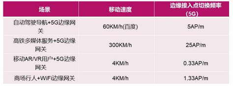
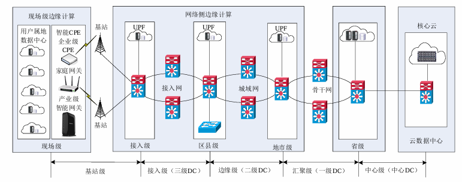
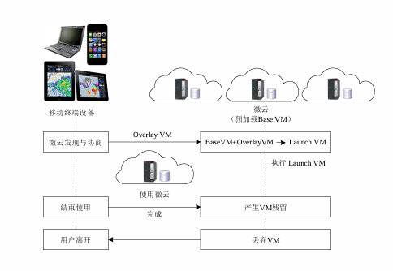
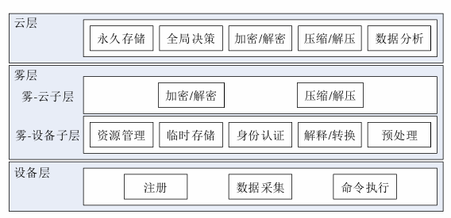
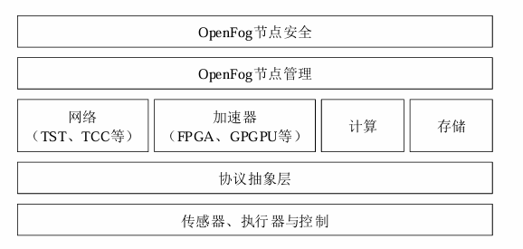
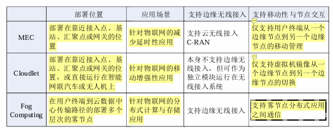

移动通信技术与 智能终端的融合
1. 5G边缘计算的核心定义与能力基石
IMT-2020（5G）推进组将5G定义为“标志性能力指标”与“一组关键技术”的有机结合体。这种定义彻底改变了移动网络的边界：它不再仅仅提供“连接”，而是通过超密集组网（UDN）等底层技术的变革，为边缘计算（MEC）提供了物理落地的土壤。
5G定义的关键技术要素
根据技术规范，5G的能力由以下两大维度支撑：
- 标志性能力指标： 明确定义为Gbps级（每秒千兆比特量级）**100Mbps**的可保障体验速率。
- 四大关键技术：
- 大规模天线阵列（Massive MIMO）： 显著提升频谱效率与覆盖深度。
- 超密集组网（UDN）： 通过极高密度的基站部署，支撑海量连接，也是MEC分布式的物理前提。
- 全频谱接入： 统筹高低频段资源，扩大单用户可用带宽。
- 新型多址： 提升系统容量，优化海量终端的并发连接效率。
2. 5G关键指标的感性认知与场景边界
将ITU（国际电联）定义的抽象指标转化为业务场景中的“感性认知”，是架构设计的核心。这种转化能帮助我们直观评估5G对特定行业（如自动驾驶或远程医疗）的战略支撑能力。
5G关键指标转化矩阵
下表将技术参数与实际业务体验关联，强调了延时、速率及流量密度对业务容量的决定性影响：
| 指标名称 | ITU技术指标 | 业务场景感性认知 |
|---|---|---|
| 峰值速率 | 20Gbps | 理想状态下，1秒钟可完成2.5GB的4K超高清视频下载。 |
| 用户体验速率 | 100Mbps | 随时随地的极致流畅；VR所需带宽门槛约为170Mbps，5G可提供泛在支持。 |
| 流量密度 | 10Tbps/km² | 满足高密集区域（如体育场馆）每平方米10Mbps的容量需求。 |
| 空口延时 | < 1ms | 车联网： 60km/h行驶时，1ms延时对应17m制动距离。 VR体验： 延时低于20ms可有效消除眩晕感。 |
| 连接密度 | 100万个/km² | 支撑万物互联，解决智慧城市海量传感器并发接入难题。 |
| 移动性 | 500km/h | 高铁（最高时速486km/h）环境下仍能保持Gbps级通信稳定性。 |
接入点切换频率分析
- 增强移动宽带通信（enhance Mobile Broadband，eMBB）
- 大规模机器类通信（massive Machine Type of Communication，mMTC）
- 超可靠低延时通信（ultra-Reliable Low Latency Communication，uRLLC）
移动速度直接影响边缘网关的接入稳定性。以下数据展示了5G相比WiFi在移动稳定性上的压倒性优势：

3. 5G融合应用体系：3+4+X与十大场景白皮书
为了结构化推进社会数字化，中国信通院（CAICT）提出了“3+4+X”体系，旨在覆盖社会生产生活的全维度。
“3+4+X”体系拆解
- “3”大应用方向： 产业数字化（赋能工业/能源）、智慧化生活（个人娱乐/医疗）、数字化治理（智慧城市）。
- “4”大通用应用：4K/5K超高清视频。VR/AR。无人机/车/船。机器人
- “X”类行业应用： 5G在工业、医疗、教育等垂直领域的深度渗透产生的碎片化应用。
本节小结： 场景多样化要求网络底层具备极高的灵活性。这种灵活性在物理上体现为MEC的部署策略，即下一节将探讨的分级架构方案。
4. MEC在5G网络中的部署策略与分级架构
MEC的部署位置是性能与成本的战略权衡。5G架构通过C/U（控制面与用户面）分离技术，实现了计算资源的弹性伸缩。
分级架构与部署权衡
5G网络数据中心（DC）呈现分级模式。架构师需根据“资源池化效率”与“极致延时”进行权衡：
- 基站级/接入级（三级DC）： 部署于CU/DU一体化基站。虽成本高、资源散，但能提供极致低延时。
- 边缘级/汇聚级（二级/一级DC）： 部署于地市或区县。资源池化效率高，适合覆盖范围较大的业务。
- 中心级（中心DC）： 负责全局控制平面部署及非实时管理。

核心支撑： UPF（用户面功能网元）是MEC的锚点。控制面集中于中心，而UPF随MEC下沉至边缘，是实现流量本地分流的关键。
典型场景部署方案对比：eMBB vs. uRLLC
| 业务类型 | 空口单向延时 | 部署战略 | 部署位置 |
|---|---|---|---|
| eMBB | 4ms（端到端10ms级） | 相对集中：追求资源池化效率与传输延时平衡 | 二级DC（地市级）或一级DC（省级） |
| uRLLC | 0.5ms（端到端1ms级） | 极致分布：采用“将多跳转为一跳”逻辑 | CU/DU一体化基站 |
本节小结： 分级部署是实现业务需求与成本平衡的关键。对于固定部署策略无法完全解决的高移动性、复杂能效问题，则需引出下一节的架构演进与科研前沿探索。
--------------------------------------------------------------------------------
5. 架构演进与前沿研究挑战
从4G向5G的演进，本质上是从“硬件驱动”向基于SDN/NFV的“软件定义”架构跨越。
从“僵化”到“柔性”的技术演变
- 4G时代： MEC服务器部署在eNodeB汇聚节点之后、SGW（服务网关）之前。架构受限于硬件专机，缺乏弹性，且多个基站共享服务器导致响应受限。
- 5G时代： 基于SDN/NFV（网络功能虚拟化）架构，MEC部署在GW-U（用户面网关/UPF）之后。两者可集成或独立部署，实现了真正的算网一体，大幅提升了部署的灵活性。
移动网络通信环境下的边缘计算
技术里程碑梳理
- 2009年： 卡内基梅隆大学提出了微云（Cloudlet）概念，率先开启了边缘计算的先河，定义了“端-边-云”三层结构。
- 2011年： 思科（Cisco）公司正式提出雾计算（Fog Computing）概念，强调通过虚拟化组件构建连续统一的资源池。
- 2013年： 移动边缘计算（MEC）概念诞生，侧重于移动基站侧的算力部署。
- 2014年： 欧洲电信标准化组织（ETSI）成立MEC工作组，正式启动需求、架构、接口及应用场景的标准化研究。
- 2015年： 开放雾计算联盟（OpenFog）成立，推动雾计算架构与工业标准的对接。
- 2016年： ETSI将MEC的内涵从移动边缘扩展为多接入边缘计算（Multi-access Edge Computing），标志着固定与移动网络的全面融合。
微云，雾计算，移动边缘计算
标准化与产业生态评价
我国MEC商业发展
- 2016年：华为牵头“建群”（成立ECC），搭建合作平台。
- 2018年：三大运营商进场定“规矩”（成立OTII），制定电信服务器标准。
- 2019年：BAT（百度、阿里、腾讯）互联网巨头加入，大家一起开始“落地赚钱”（推动商业部署）。
MEC标准化工作
- 2014年，ETSI率先启动MEC标准项目研究。
- 2017年底， 聚焦4G架构，定义了应用支撑API及无线侧能力服务API，包括RNIS（无线网络信息服务）、定位及带宽管理等核心功能。
- 2018年9月，重点转向5G、Wi-Fi及固网的融合接入，完善编排管理与运维框架。
MEC 标准化工作方向
- MEC与5G的结合
- MEC与垂直行业的结合
- MEC与开源的结合
过渡： 标准化为具体技术形态的落地铺平了道路。在诸多形态中，微云（Cloudlet）作为“云边端”架构的先行者，最早在工程实践中解决了物理邻近性带来的延迟优化问题。
2. 微云 (Cloudlet)：云边端三层架构的先行者
微云（Cloudlet）的核心价值在于将传统的“端-云”二层结构重塑为“端-边-云”三层结构。
通过在接入网与核心网之间引入可信的算力节点，，移动终端到Cloudlet仅有“一跳”距离微云，有效地将广域网带来的延迟抖动从计算密集型应用中剥离，确保了计算迁移的实时性。
微云作为边缘算力的“先锋”，具备以下四个显著特征：
- 可信性与资源丰富性： 它不仅是一个物理节点，更是一个可信的主机群，拥有充足的算力以承载多用户的并发任务迁移。
- 软状态设计： Cloudlet服务器采用软状态设计，极大地优化了服务器与移动终端之间的数据缓存与传输逻辑。
- 物理邻近性： 通常与终端接入同一基站或Wi-Fi，维持“一跳（One-hop）”距离，使网络带宽和延迟变得精准可控。
- 部署灵活性： 支持直接部署在移动车辆或机器人上，实现“服务随人动”。
虚拟机合成 (VM Synthesis) 机制解析
微云的工作核心在于通过虚拟机技术实现环境的按需交付，其技术逻辑涉及三个关键概念：
Base VM（通用数据部分）： 预加载在微云服务器上的基础镜像，包含操作系统及通用库，不含具体应用逻辑。
VM Overlay（应用相关数据部分）： 由移动终端携带的、包含特定应用程序及其运行环境差异化的压缩数据。
Launch VM（虚拟机合成产物）： 通过将 Base VM 与 VM Overlay 进行合成，在边缘侧即时生成的、可立即为用户提供服务的完整虚拟机镜像。
工作流程图解化描述
微云的生命周期是一个从动态合成到资源回收的闭环：
- 发现与协商： 移动终端主动发现邻近的微云，并就计算能力、存储空间等进行协议协商。
- 虚拟机合成： 终端将 Overlay VM 传输至边缘，微云利用预加载的 Base VM 进行合成，配置出对应的运行环境。
- 使用与执行： Launch VM 正式上线，接收移动终端迁移的任务并执行。
- 丢弃与清理： 任务结束后，Launch VM 被丢弃以释放资源。值得注意的是，该过程可能产生VM残留（VM Residuals），这需要在后续的清理机制中予以处理。
过渡： 微云在“一跳”范围内提供了极佳的实时性，但为了应对更广泛、分布更散的物联网（IoT）传感器网络，雾计算（Fog Computing）应运而生。

3. 雾计算 (Fog Computing)：构建连续统一的分布式资源池
雾计算与云计算在架构上呈现出“中心化”与“泛在分布”的对立统一。相较于“高高在上”的云，雾更贴近“地面”的终端。
它通过引入中间“雾层”，将网络从单纯的“数据管道（Data Pipe）”转化为具备预处理、存储和转发能力的“流水线（Pipeline）”。
多维定义解析
Cisco 将雾定义为由虚拟化组件构成的资源池，旨在为智能网格与海量传感器环境提供分布式处理能力。L. M. Vaquero 则强调雾计算是通过中间层扩展云结构，通过将地理分布广泛、数量庞大的雾节点联网，弥补了单体设备资源不足的缺陷。
三层架构详解
雾计算构建了一个连续的层级化管理模型：
- 云层： 处于顶层，负责永久存储、复杂的数据分析及全局性决策。
- 雾层（核心）：部署在用户到核心云的传输路径上。其实就是边缘层
- 雾-云子层： 侧重资源管理、身份认证、临时存储及负载均衡。
- 雾-设备子层： 负责数据预处理（如压缩/解压、加密/解密）、解释与协议转换。
- 设备层： 由执行器、传感器及物联网终端组成，负责最底层的数据采集与指令响应。

节点功能分析
根据 OpenFog 标准，雾节点的功能结构涵盖了从底层协议到高层管理的完整堆栈：
- 安全与管理： 确保大规模分布式环境下的节点可控与数据安全。
- 计算、存储与加速器： 引入 FPGA、GPGPU 等硬件加速模块，提升边缘处理效能。
- 协议抽象层： 屏蔽底层不同通信协议的差异，实现异构设备的互联互通。
- 网络支持： 特别强调对云无线接入（C-RAN）的支持，以优化无线侧资源的动态调度。

过渡： 雾计算实现了计算能力的泛在渗透，但其海量的异构节点对软件架构提出了巨大挑战，这促使了中间件技术成为边缘计算架构（FEA）的核心。
4. 边缘计算中间件 (FEA)：屏蔽差异与资源调度的核心
在移动通信环境下，开发者面临 MEC、微云、雾计算等多种异构底座。FEA（雾计算与边缘计算架构）中间件技术通过软件定义的方式，屏蔽了底层硬件差异，提供了统一的编程接口，是降低编程难度、实现算力民主化的关键所在。
基本功能
| 功能维度 | 描述说明 |
|---|---|
| 设备发现 | 动态识别并接入边缘环境中的可用计算与存储节点 |
| 运行环境 | 为应用提供容器化或沙箱化的执行支撑，屏蔽OS差异 |
| 最小中断 | 确保任务在移动性导致的网络切换中保持业务连续性 |
| 开销管理 | 监控中间件自身操作参数产生的资源消耗，避免过载 |
| 自适应设计 | 环境感知型设计，根据地理位置变化动态调整服务策略 |
| QoS保障 | 严格执行应用预设的服务质量指标，如延迟与抖动控制 |
资源管理与调度逻辑
中间件在架构中充当“算力指挥官”，其核心逻辑包括执行管理、调度与资源管理以及移动性管理。
- 环境监控和预测： 中间件通过对网络状况和节点状态的实时监控，预测未来的资源需求。
- 代理选择（Proxy Selection）： 在多节点环境下，根据延迟和负载为终端精准选择最优的边缘代理。
- 资源消耗优化： 针对边缘设备位置动态改变的特性，中间件需优化控制算法，防止决策开销对边缘设备电量和算力的过度侵蚀。
过渡： 中间件通过软件手段实现了能力的标准化开放，而要深入理解边缘计算的全局图景，还需对各类技术形态进行横向深度对比。
5. 核心技术特征深度对比与总结
尽管 MEC、微云与雾计算在“算力下沉”这一大方向上一致，但在技术基因和应用侧重上存在显著差异。
综合对比评估
| 技术形态 | 部署位置 | 管理模式与核心侧重 | 关键技术特征 |
|---|---|---|---|
| MEC | 靠近用户的移动基站处 | IaaS管理模式：划分网络层、主机层与系统层 | 强调与5G深度融合，支持C-RAN及电信级安全保障 |
| 微云 | 接入网边缘（一跳距离） | 虚拟机合成技术：侧重交互性强的计算任务迁移 | 软状态设计，Base VM/Overlay合成，极致的低延迟 |
| 雾计算 | 终端到核心云的路径上 | 分布式资源池：强调连续统一体（Continuum） | 节点数量大、类型多、分布广，支持大规模IoT场景 |
